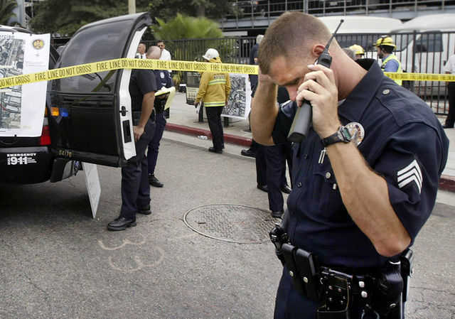

Radio
Radios are used in a number of places within the King County Police Department. Radios are used to communicate between officers and dispatchers to receive important information about crimes in progress and logistical information. Officers will often carry a portable radio with them so that they may communicate when they are away from their police vehicles and also have a radio system hooked up within their vehicle.
Radios provide a lot of value to the police officers and dispatchers that use them, but also add a great deal of risk to the equation due to the fact that you cannot see who is on the other side. There have also been issues with radio frequencies being listened in on.
Keeping the radio communications between officers and dispatchers private is one of the main goals of anyone managing risks within the police department, so controls must be in put in place to stop attacks against it.

Threats
Man in the Middle
The radio signals emitted by police and dispatcher radios are susceptible to be intercepted by attackers. This type of attack is often called snooping or a man in the middle attack. Basically it means that the messages being sent to and from officers are being heard by another person.
This type of vulnerability could be a major problem in the police department; mainly because the information being sent across radio frequencies is so important. Information that is leaked over radio could potentially bring harm to the officers or even the citizens that they are trying to protect.
Spoofing
A spoofing attack is when someone pretends to be someone else in order to obtain certain information or gain access to information that they are unauthorized to view.
In the context of radio communications, a spoofing attack would involve pretending to be either an officer or a dispatcher on the other side of the radio call. In this situation, information disclosure is a possibility if the victim is unaware that a malicious individual is on the other side of the call.
Mitigations
Secure Voice
One solution to combat people listening in on radio calls is to use an encrypted radio transmission. Radio encryption provides another layer of security to help combat man in the middle attacks. If an attacker were really motivated to listen in on police radio transmissions, they would have to decrypt or unscramble to transmission in order to comprehend it.
Authentication
Having a good authentication system to identify who is talking over the radio can help prevent spoofing. For example, a police officer can state their employee id or code name before transmitting a request.
Commands that require extra authority would have to require two or more authentication checks to make sure that the person sending the request is in fact a police officer. This will help prevent people from having too much power if they manage to get a hold of a police officer's radio.